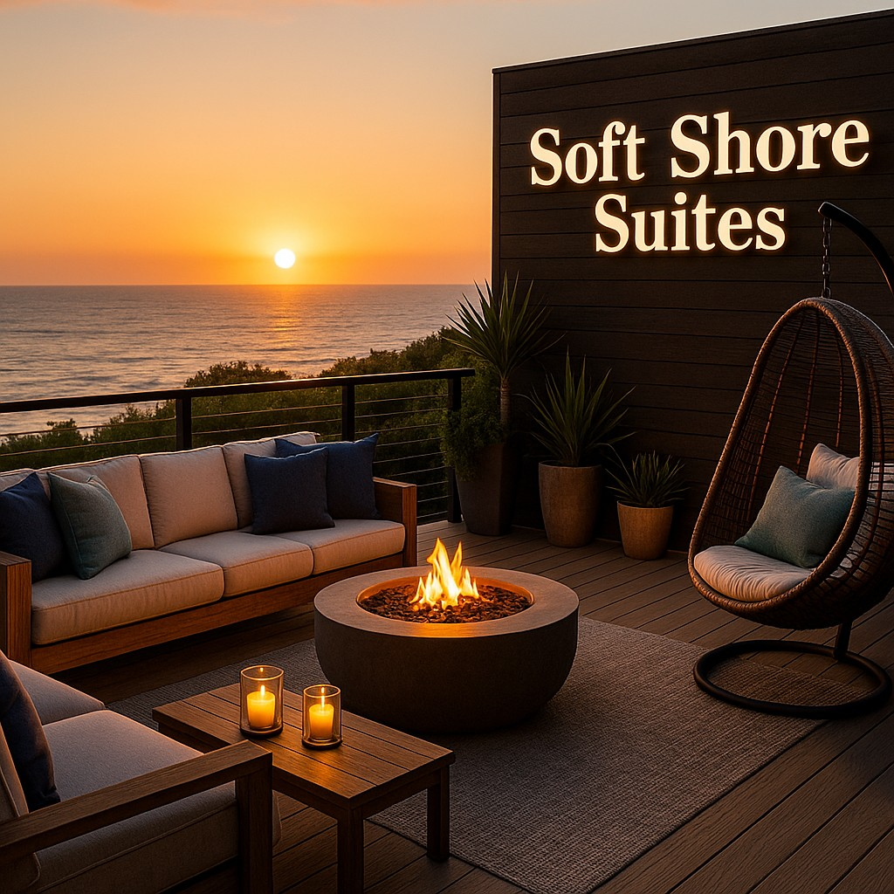

Weekend Events
Weekend Event Schedule
| Time | Event | Location |
|---|---|---|
| 8:00 AM | Complimentary Breakfast Bar | Beach Lounge |
| 11:00 AM | Pool & Jacuzzi Relaxation | Outdoor Spa Deck |
| 2:00 PM | Light Games & Reading Time | Common Room |
| 6:30 PM | Sunset Lounge Hour | Ocean View Patio |
| 8:00 PM | Live Band / Soft DJ Set | Evening Event Deck |
On weekends, Soft Shore Suites offers a Signature Weekend Escape to make your stay feel more like a private resort by the water. It is simple, relaxing, and made for guests who want a modern, luxury experience.
Signature weekend activities:
- 24-hour butler service to help with bags, snacks, and special requests
- Sunset time in the beach lounge with ocean views and cozy seating
- Heated pool and relaxing jacuzzi for evening swims
- Spa and facial sessions to refresh your skin during your stay
- Live band or soft DJ set on select weekend nights
- Quiet game or reading time in our common area with soft music
Events may change by season. Ask us when you arrive for a list of current times and activities, or visit our Contact & Booking page to send your travel dates for 2026.